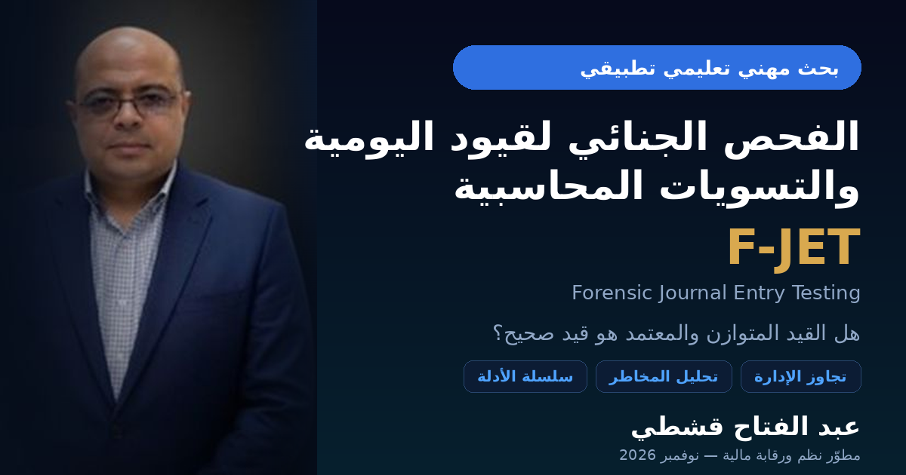

هل يعني غياب التدفق النقدي أن الإيراد غير صحيح؟ خوارزمية قائمة على المخاطر لكشف التلاعب وتجاوز الإدارة.||Does missing cash flow mean revenue is wrong? A risk-based algorithm for detecting manipulation and management override.

توازن القيد لا يثبت صحة مضمونه، والاعتماد الإلكتروني لا يثبت مشروعية المعاملة، والمؤشر الآلي ليس دليلًا قاطعًا على الغش. يقترح البحث إطار F-JET الذي يجمع سلامة البيانات، والتحليل القائم على المخاطر، والاختبارات الإحصائية، وتحليل المستخدمين والتوقيت والحسابات، والفحص المستندي والاقتصادي، وقياس الأثر المالي، مع حفظ سلسلة الأدلة.||A balanced entry does not prove its substance is true; electronic approval does not prove a transaction is legitimate; and an automated flag is not conclusive evidence of fraud. The paper proposes F-JET, which combines data integrity, risk-based analytics, statistical tests, user/timing/account analysis, documentary and economic review, impact measurement and an evidence chain of custody.
لا نتائج شاملة قبل إثبات اكتمال القيود.||No coverage claim before completeness is proven.
كل درجة تأتي مع أسبابها.||Every score ships with its reasons.
البحث عن ما ينفي الفرضية كما يؤيدها.||Seek evidence that refutes, not just confirms.
الفحص الجنائي المحاسبي · قيود اليومية · الغش المالي · تجاوز الإدارة للضوابط · تحليل البيانات · سلسلة حفظ الأدلة||Forensic accounting · journal entry testing · financial fraud · management override · data analytics · evidence chain of custody
Koshty, A. (2026). Forensic Journal Entry Testing (F-JET): A Risk-Based Algorithm for Detecting Financial Manipulation. Independent educational research, November 2026.||Koshty, A. (2026). Forensic Journal Entry Testing (F-JET): A Risk-Based Algorithm for Detecting Financial Manipulation. Independent educational research, November 2026.
| البعد||Dimension | مراجعة القوائم||Financial Statement Audit | الفحص الجنائي الخوارزمي||Algorithmic Forensic Review |
|---|---|---|
| الهدف||Objective | تأكيد معقول بخلو القوائم من تحريف جوهري||Reasonable assurance on material misstatement | التحقق من فرضية أو واقعة وإعادة بناء الأحداث||Test a hypothesis; reconstruct events |
| النطاق||Scope | وفق المخاطر والجوهرية||Risk and materiality driven | يمتد إلى أطراف وأنظمة وسجلات وفق التفويض||Extends to parties, systems, logs per mandate |
| الاختيار||Selection | عينات غالبًا بالقيمة أو الزمن||Samples, often by value or date | 100% من المجتمع مرتبة بالمخاطر لا بالقيمة وحدها||Full population ranked by risk, not value alone |
| الأدلة||Evidence | كافية وملائمة لدعم الرأي||Sufficient and appropriate for the opinion | قابلة للتتبع مع حفظ وسلسلة حيازة||Traceable, preserved, chain of custody |
| الحدود||Limits | لا يضمن اكتشاف كل غش||No guarantee of detecting all fraud | لا يثبت النية من مؤشر منفرد||Intent cannot be inferred from one indicator |
| البعد||Dimension | السؤال الأساسي||Core question |
|---|---|
| السلامة الحسابية||Arithmetic integrity | هل يتوازن؟ هل عولجت العملة وسعر الصرف؟||Does it balance? FX handled correctly? |
| الإثبات المستندي||Documentary support | هل يوجد مستند أصلي يتفق مع القيمة والتاريخ والطرف؟||Is there an original document matching value, date, party? |
| الاتساق الاقتصادي||Economic consistency | هل توجد حقيقة اقتصادية وسبب تجاري؟||Is there a real economic substance and business reason? |
| الشرعية الرقابية||Control legitimacy | من أنشأ واعتمد؟ هل عُدّل بعد الاعتماد؟||Who created/approved? Edited after approval? |
| الأثر المالي||Financial impact | هل غيّر الأرباح أو الأصول أو الالتزامات أو التعهدات؟||Did it move profit, assets, liabilities or covenants? |
| القطع الزمني||Cut-off | هل سُجل في الفترة الصحيحة؟||Recorded in the right period? |
| النوع||Type | الشكل||Form | الخطر المميز||Characteristic risk |
|---|---|---|
| قيود عادية / روتينية||Routine entries | آلية من المبيعات والمشتريات والنقدية||System-generated from sales, purchasing, cash | أخطاء ربط، تكرار تسجيل، تجزئة المعاملات||Interface errors, duplicates, split transactions |
| قيود التسوية الدورية||Periodic adjusting entries | استحقاقات وإهلاك ومخصصات ومقدمات||Accruals, depreciation, provisions, prepayments | تقديرات متحيزة وقطع زمني، وعادة يدوية||Biased estimates, cut-off; usually manual |
| قيود الإقفال والتسوية الختامية||Closing / year-end entries | بعد قفل الفترة أو قرب نهايتها||Posted at or after period close | تحسين النتائج ظاهريًا ثم العكس لاحقًا||Cosmetic result shaping then later reversal |
| إعادة التصنيف والتوحيد||Reclassification & consolidation | نقل أرصدة بين حسابات أو كيانات، وقد تكون خارج الأستاذ||Moves between accounts/entities, often outside the ledger | إخفاء التزامات، تغيير العرض والتعهدات||Hiding liabilities; presentation and covenant effects |
| القيود المركبة||Compound entries | عدة أسطر مدينة ودائنة في قيد واحد||Many debit/credit lines in one entry | إخفاء سطر غير مبرر داخل قيد كبير||One unsupported line buried inside a large entry |
من يُنشئ لا يعتمد ولا يرحّل ولا يطابق.||Creator ≠ approver ≠ poster ≠ reconciler.
حدود مبالغ وأنواع حسابات لكل دور، وتُراجع دوريًا.||Amount and account limits per role, reviewed periodically.
اعتماد مستقل لكل قيد يدوي أو عالي المخاطر.||Independent approval of every manual or high-risk entry.
يمنع ترحيل قيد غير متوازن أو بفترة مغلقة.||Blocks unbalanced or closed-period postings.
يوثق الإنشاء والتعديل والحذف والترحيل بالمستخدم والوقت.||Logs create/edit/delete/post by user and time, append-only.
F-JET اسم مقترح لإطار تطبيقي وليس معيارًا رسميًا. مراحله: ① جمع البيانات وحفظها وبصمتها ② اختبار اكتمال المجتمع ③ توليد المؤشرات ④ الترتيب بالأولوية ⑤ الفحص المستندي والاقتصادي ⑥ توسيع الاختبارات ⑦ الاستنتاج والتقرير ومراجعة الجودة.||F-JET is a proposed practical framework, not an official standard. Seven stages: ① extract, preserve, hash ② population completeness ③ generate risk indicators ④ prioritise ⑤ documentary & economic review ⑥ extend tests ⑦ conclude, report, quality review.
R = Σ ( wᵢ × sᵢ / 5 ) , sᵢ ∈ [0,5] , Σ wᵢ = 100الأوزان أولية للتجربة وليست معتمدة إحصائيًا||Initial experimental weights, not statistically validated| الدرجة||Score | الأولوية||Priority | الإجراء||Action |
|---|---|---|
| 0–24||0–24 | منخفضة||Low | لا تعفي من الاختبارات الإلزامية||Does not waive mandatory tests |
| 25–49||25–49 | متوسطة||Medium | فحص التفسير والمستندات والعلاقات||Review explanation, documents, relationships |
| 50–74||50–74 | مرتفعة||High | اختبار موسع للمستندات والاعتماد والتوقيت والأثر||Extended testing of support, approval, timing, impact |
| 75–100||75–100 | حرجة||Critical | فحص عاجل وحفظ أدلة وتصعيد||Urgent deep review, evidence preservation, escalation |
اختر حالة من البحث أو عدّل الدرجات (0–5). درجات الحالات A وB وC توضيحية افتراضية من إعدادنا وليست من نص البحث.||Pick a case or adjust scores (0–5). Scores for Cases A, B, C are illustrative assumptions, not taken from the paper.
نموذج شبه تنفيذي يوضح المنطق وليس برنامجًا جاهزًا؛ تلزمه اختبارات وحدات وتحقق على بيانات تجريبية.||Semi-executable pseudocode showing the logic, not a ready program; it needs unit tests and validation on test data.
def forensic_jet(journal_entries, materiality, weights):
population = validate_source_integrity(journal_entries)
if not population.completeness_supported:
return {"status": "QUALIFIED",
"reason": "Completeness not established"}
integrity = run_integrity_tests(population)
reconciliation = reconcile_to_trial_balance(population)
features = build_features(population, tests=[
"period_end_and_post_close", "unusual_user_or_privilege",
"round_or_repeated_amounts", "unusual_account_relationships",
"missing_or_duplicate_support", "financial_statement_impact",
"reversal_and_reposting_patterns"])
scores = score_entries(features, weights)
queue = prioritize(scores, materiality, integrity, reconciliation)
cases = []
for entry in queue:
evidence = collect_and_cross_check_evidence(entry)
cases.append({"entry_id": entry.id, "risk_score": entry.risk_score,
"reasons": entry.risk_reasons, "evidence": evidence,
"conclusion": reviewer_assessment(entry, evidence)})
return prepare_audit_report(population, cases, integrity, reconciliation)-- Illustrative SQL: period-end manual entries lacking support, user = approver SELECT je.entry_id, je.created_by, je.approved_by, je.total_amount FROM journal_entries je WHERE je.source = 'MANUAL' AND je.posting_date >= :period_end - INTERVAL '3 day' AND (je.support_ref IS NULL OR je.created_by = je.approved_by);
مقارنة تحليلية تعليمية بالاستناد إلى وقائع منشورة علنيًا؛ هي استنتاج بأثر رجعي وليست حكمًا على أشخاص أو إثباتًا بأن الإطار كان سيمنع الواقعة. تحقق من المصادر الأصلية قبل الاستشهاد.||An educational comparison based on public accounts; it is hindsight reasoning, not a verdict on individuals nor proof F-JET would have prevented the event. Verify primary sources before citing.
| الواقعة||Case | ما حدث (باختصار)||What happened (brief) | إشارات F-JET المبكرة||Early F-JET signals |
|---|---|---|
| WorldCom (2002)||WorldCom (2002) | رسملة تكاليف خطوط (مصروفات تشغيلية) كأصول، ما ضخّم الأرباح بمليارات الدولارات.||Line costs (operating expenses) capitalised as assets, inflating profits by billions of dollars. | مجموعة الحسابات: مصروف ← أصل؛ مستندات: ضعف الإثبات؛ أثر مالي: تحسين الربح؛ قيود تسوية نهاية الربع يدوية.||Accounts: expense→asset; Documents: weak support; Impact: profit uplift; manual quarter-end top-side entries. |
| Enron (2001)||Enron (2001) | كيانات ذات غرض خاص ومعاملات مع أطراف ذات علاقة أخفت ديونًا وضخّمت النتائج.||Special-purpose entities and related-party deals hid debt and inflated results. | الأطراف ذات العلاقة: قيود غير متبادلة؛ علاقات حسابات نادرة؛ تسويات توحيد خارج الأستاذ؛ تعقيد المركبة.||Related parties: non-reciprocal entries; rare account links; off-ledger consolidation adjustments; compound-entry complexity. |
| Wirecard (2020)||Wirecard (2020) | أرصدة نقدية بنحو 1.9 مليار يورو لم يُتحقق من وجودها لدى جهات خارجية.||About €1.9bn of cash balances could not be verified with third parties. | الإثبات: غياب مصدر مستقل (كشف بنك)؛ أرصدة وسيطة/ضمان؛ أرباح دون تدفق نقدي؛ مطابقة مستقلة مفقودة.||Support: no independent source (bank statement); escrow/trust balances; profit without cash flow; missing independent reconciliation. |
| نمط الخطر||Risk pattern | المؤشر الأولي||Initial indicator | الإجراء المقترح||Suggested procedure |
|---|---|---|
| تضخيم الإيرادات||Revenue inflation | قيد غير معتاد قرب نهاية الفترة||Unusual entry near period end | العقد والتسليم والاستحقاق والقطع||Contract, delivery, accrual, cut-off |
| تأجيل المصروفات||Expense deferral | مصروف إلى أصل أو حساب معلق||Expense moved to asset or suspense | شروط الاعتراف بالأصل وطبيعة الإنفاق||Asset-recognition criteria; nature of spend |
| إخفاء الالتزامات||Hidden liabilities | غياب التزامات متوقعة||Missing expected liabilities | المدفوعات والفواتير اللاحقة||Subsequent payments and invoices |
| تضخيم المخزون||Inventory inflation | تسويات جرد غير معتادة||Unusual count adjustments | مطابقة الحركة والجرد والقيمة القابلة للتحقق||Reconcile movement, count, NRV |
| التلاعب بالمخصصات||Provision manipulation | تغير جوهري في تقدير نهاية الفترة||Material year-end estimate change | الافتراضات والبيانات وأثر التغيير||Assumptions, data, impact of change |
| إعادة تصنيف غير مبررة||Unjustified reclassification | نقل أرصدة بين حسابات أو فترات||Balances moved across accounts/periods | الأساس المحاسبي والعرض والإفصاح||Basis, presentation, disclosure |
| تجاوز الصلاحيات||Authority override | قيد من مستخدم غير معتاد||Entry by unusual user | سجل النظام والموافقات والتفويضات||System log, approvals, delegations |
| قيود وهمية محتملة||Possible fictitious entries | قيد بلا سند أو بطرف غير قابل للتحقق||No support or unverifiable party | تحقق مستقل من المعاملة والطرف||Independent verification of deal and party |
| التسويات البنكية||Bank reconciliations | فروق غير مفسرة أو بنود معلقة||Unexplained differences, stale items | مطابقة مستقلة مع كشف البنك||Independent match to bank statement |
| الأطراف ذات العلاقة||Related parties | قيود غير متبادلة||Non-reciprocal entries | مطابقة الطرف الآخر والإفصاحات||Counterparty match; disclosures |
المصفوفة تحدد فرضيات للفحص وليست إثباتات؛ قد تكون المعاملة مشروعة رغم انطباق مؤشر عليها.||The matrix sets hypotheses to test, not proofs; a legitimate transaction may still trigger an indicator.
قيد 31 ديسمبر: مدين مصروفات تشغيلية 4,800,000 جنيه / دائن مصروفات مستحقة 4,800,000، الوصف «تسوية نهاية العام»، بلا مستند مرفق، وعُكس في 2 يناير.||31 December entry: Dr operating expenses EGP 4,800,000 / Cr accrued expenses 4,800,000; description “year-end adjustment”; no attachment; reversed on 2 January.
الاستنتاج: إن ثبت التزام حقيقي فقد يكون القيد صحيحًا رغم ضعف الوصف؛ وإن لم يوجد التزام ولا أدلة كافية سُجلت حالة نقص إثبات ووُسّع الفحص. لا يوصف القيد بالاحتيالي إلا إذا دعمت الأدلة ذلك.||Conclusion: with a real obligation the entry may be valid despite a weak description; without one and without evidence, record an evidence deficiency and extend testing. Never label an entry fraudulent unless the evidence supports it.
| الحالة||Case | القيمة (جنيه)||Value (EGP) | الإجراء||Action |
|---|---|---|
| A — إيراد غير معتاد||A — Unusual revenue | 8,000,000||8,000,000 | العقد والتسليم وشروط الاعتراف والتحصيل اللاحق||Contract, delivery, recognition, later collection |
| B — مصروف مؤجل||B — Deferred expense | 2,400,000||2,400,000 | طبيعة الإنفاق وشروط الرسملة||Nature of spend; capitalisation criteria |
| C — تسوية غير معتمدة||C — Unapproved adjustment | 1,100,000||1,100,000 | التفويض وسجل الاعتماد والأثر||Authorisation, approval log, impact |
لا تُجمع المبالغ الثلاثة وتوصف بأنها غش أو خسارة. اختبر كل قيد منفردًا ثم ابحث عن روابط (مستخدم، مستند، توقيت). التصنيف النهائي: معاملة مؤيدة، أو خطأ محاسبي، أو تحريف محتمل، أو مخالفة رقابية مثبتة، أو اشتباه يتطلب تحقيقًا، أو تعذر الاستنتاج. الأرقام افتراضية للتعليم.||Do not sum the three and call it fraud or loss. Test each alone, then look for links (user, document, timing). Final classification: supported transaction, accounting error, probable misstatement, proven control breach, suspicion requiring investigation, or unable to conclude. Figures are hypothetical.
معرف القيد وسبب اختياره · درجة الخطر ومكوناتها · الفرضية · المستندات المتاحة والمفقودة · الأدلة المؤيدة والمعارضة · الأثر المحتمل والمثبت · النتيجة وحدودها · الفاحص والمراجع وتاريخ الإغلاق · الإجراءات التالية.||Entry ID and selection reason · risk score and components · hypothesis · available/missing documents · supporting and contradicting evidence · potential vs proven impact · conclusion and limits · examiner, reviewer, closing date · next actions.
| المفهوم||Concept | التعريف||Definition |
|---|---|
| القيمة الاسمية المختبرة||Nominal value tested | إجمالي المبالغ التي اختُبرت||Total amounts tested |
| القيمة المعرضة للمخاطر||Value at risk | ما قد يتأثر إذا ثبتت الفرضية||What may be affected if the hypothesis holds |
| التحريف المثبت||Proven misstatement | الأثر المحدد بالأدلة والإطار المحاسبي||Impact fixed by evidence and framework |
| التعرض الأوسع المقدر||Estimated wider exposure | تقدير مشروط بمنهج معلن وبيانات كافية||Conditional estimate with a stated method and enough data |
لا يُعد مجموع القيود المنبّهة خسارة فعلية، ولا تُضرب قيمة عينة في العدد الكلي لتقديم الناتج غشًا مثبتًا دون أساس إحصائي.||Flagged totals are not actual losses, and a sample value must not be scaled to the population as proven fraud without a statistical basis.
| المؤشر||Metric | المعادلة||Formula |
|---|---|
| Precision||Precision | إيجابيات مؤكدة ÷ حالات مُصعّدة||Confirmed positives ÷ escalated cases |
| Recall||Recall | حالات معروفة اكتُشفت ÷ إجمالي المعروفة||Known cases found ÷ all known cases |
| False Positive Rate||False Positive Rate | إيجابيات كاذبة ÷ إجمالي غير الإيجابية||False positives ÷ all negatives |
| Coverage / Reproducibility||Coverage / Reproducibility | تغطية الاختبارات المطلوبة وإمكانية إعادة الإنتاج||Required-test coverage; ability to reproduce results |
لا تُحسب Precision وRecall بموثوقية دون مجموعة اختبار مرجعية، وندرة الغش قد تجعل الدقة الإجمالية مضللة.||Precision and Recall are unreliable without a labelled reference set; fraud rarity can make overall accuracy misleading.
لا خوارزمية تضمن اكتشاف كل غش، ولا تُستنتج النية من نمط رقمي وحده، ولا تثبت سلامة القيود المختبرة سلامة غير المختبرة.||No algorithm guarantees detection of all fraud; intent cannot be inferred from a numeric pattern; and tested entries say nothing about untested ones.
لا يُحكم على القيد من شكله أو قيمته أو درجته وحدها، بل من اتساقه مع الحقيقة الاقتصادية وسلامة اعتماده وكفاية أدلته.||An entry is judged not by its form, value or score alone, but by its consistency with economic reality, soundness of approval and sufficiency of evidence.